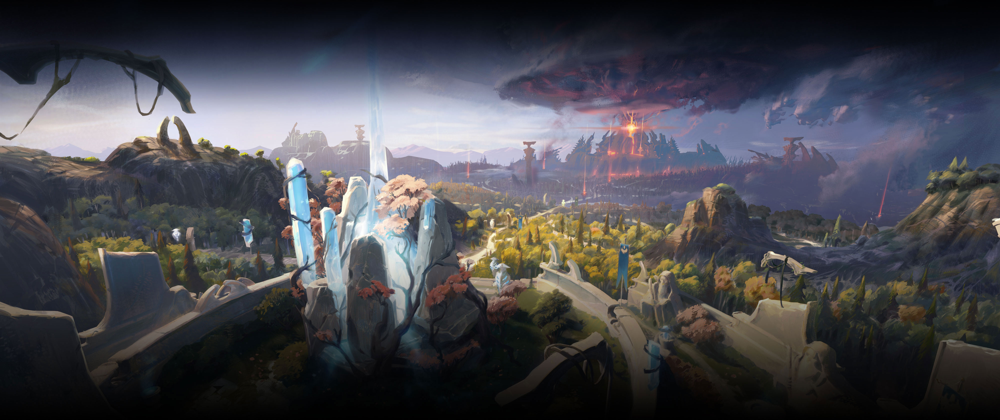
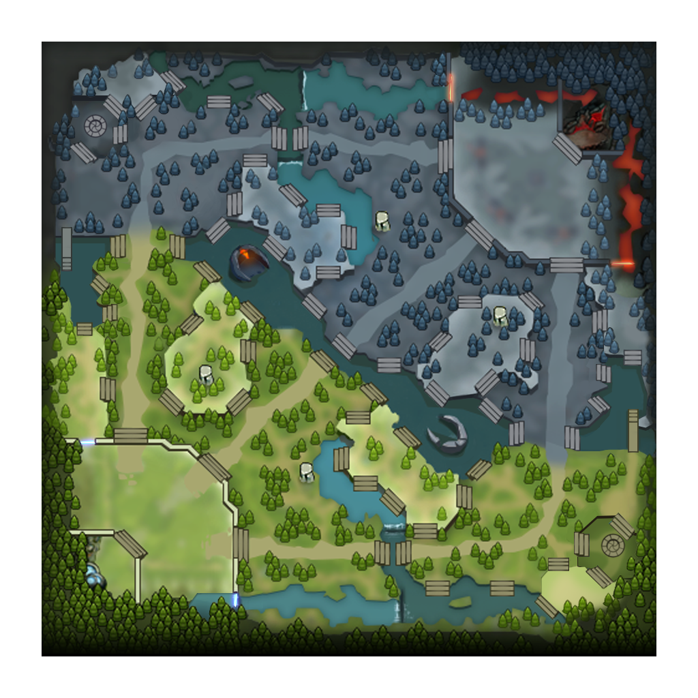

01
Ресурсы дают силу
Добивай крипов последним ударом, чтобы получать золото. Опыт поблизости от умирающих врагов повышает уровень. Предметы и способности превращают эти ресурсы в преимущество.

Разберись в Dota 2, а не просто выучи сборку. От первого добитого крипа до решений, которые выигрывают матч.
Побеждает команда, которая разрушает вражеский Древний. Убийства и золото — инструменты, а не конечная цель.
Добивай крипов последним ударом, чтобы получать золото. Опыт поблизости от умирающих врагов повышает уровень. Предметы и способности превращают эти ресурсы в преимущество.
Смотри на мини-карту между добиваниями. Если противник исчез с линии, он может идти к тебе. Варды помогают увидеть опасность раньше, но не делают всю карту безопасной.
После удачной драки заберите башню, отнимите вражеский фарм или подготовьте Рошана. Бессмысленная погоня может стоить команде всего полученного преимущества.
Выбери сторону и позицию. Изучи, где начинать игру и какую задачу выполнять на своей линии.

◆◆Не секретные комбинации, а привычки, которые дают больше контроля над игрой.
Отметь готовность. Чек-лист сохраняется в этом браузере.
Короткий словарь, чтобы игровые термины помогали, а не мешали.
Последний удар по крипу. За добитого вражеского крипа ты получаешь золото.
Добивание союзного крипа, когда это доступно. Ограничивает ресурсы соперника.
Агрессия: кого сейчас атакуют крипы или другие существа.
Ты уводишь союзных крипов к нейтральному лагерю, меняя движение волны.
Ты выводишь нейтралов из зоны лагеря к моменту появления новых, чтобы накопить несколько групп.
Нападение с помощью перемещения союзников для численного преимущества.
Источник обзора и информация, которую твоя команда видит на карте.
Момент силы: например, новый уровень, готовая способность или ключевой предмет.
Пространство и время, которые союзники могут использовать для фарма или целей.
Выкуп: возвращение после смерти за золото при доступной возможности.
Развеивание: снимает определённые эффекты. Тип развеивания и эффекта имеют значение.
Возвышенность. Заходить на неё без обзора опасно; штурм базы требует подготовки.